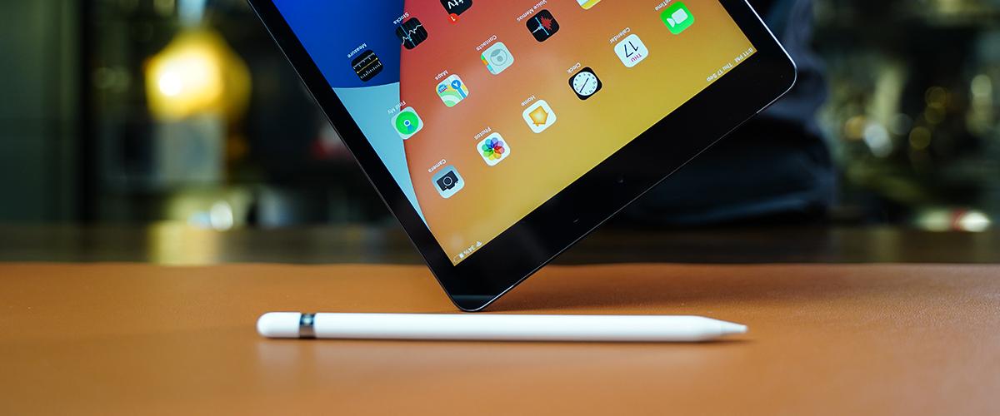
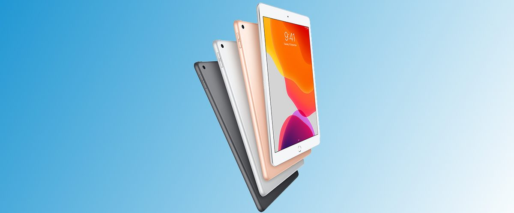
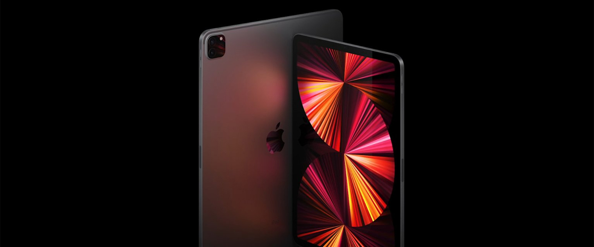

ipad & ipad pro
Design Pioneering engineering.
Oct 14, 2022,06:34pm EDT

Apple in October 2022 refreshed its iPad Pro lineup, introducing a range of small improvements
including the M2 chip, Apple Pencil hover, ProRes video recording, Bluetooth 5.3, and Wi-Fi 6E.
When it comes to design, the iPad Pro is unchanged, available in 11- and 12.9-inch sizes
with an all-screen design and an edge-to-edge display that does not include a Home button. Like the 2018, 2020, and 2021 iPad Pro models,
the 2022 iPad Pro features a TrueDepth camera system with Face
ID that uses facial recognition for biometric authentication and offers
a 12-megapixel front-facing camera for selfies and Center Stage during video calls.
Both of the iPad Pro models feature an aluminum chassis in Silver or Space Gray with flat,
rounded edges that wrap around the Liquid Retina display.
The 12.9-inch model features a Liquid Retina XDR mini-LED display, bringing
extreme dynamic range to the iPad Pro. The Liquid Retina XDR uses more than
10,000 LEDs across the entire back of the display and can deliver up to 1,000 nits of full-screen brightness,
1,600 nits of peak brightness, a 1 million-to-1 contrast ratio, and true-to-life HDR to enhance creative workflows for a "stunning" visual experience.
Apple in October 2022 refreshed its iPad Pro lineup, introducing a range of small improvements including the M2 chip, Apple Pencil hover, ProRes video recording, Bluetooth 5.3, and Wi-Fi 6E. When it comes to design, the iPad Pro is unchanged, available in 11- and 12.9-inch sizes with an all-screen design and an edge-to-edge display that does not include a Home button. Like the 2018, 2020, and 2021 iPad Pro models, the 2022 iPad Pro features a TrueDepth camera system with Face ID that uses facial recognition for biometric authentication and offers a 12-megapixel front-facing camera for selfies and Center Stage during video calls. Both of the iPad Pro models feature an aluminum chassis in Silver or Space Gray with flat, rounded edges that wrap around the Liquid Retina display. The 12.9-inch model features a Liquid Retina XDR mini-LED display, bringing extreme dynamic range to the iPad Pro. The Liquid Retina XDR uses more than 10,000 LEDs across the entire back of the display and can deliver up to 1,000 nits of full-screen brightness, 1,600 nits of peak brightness, a 1 million-to-1 contrast ratio, and true-to-life HDR to enhance creative workflows for a "stunning" visual experience.
Design
The 2022 iPad Pro models received no major design refreshes and continue to look like the 2018, 2020, and 2021 iPad Pro models. The 11-inch iPad Pro measures in at 9.74 inches (247.6 mm) long and 7.02 inches (178.5 mm) wide, while the 12.9-inch model measures in at 11.04 inches (280.6 mm) long and 8.46 inches (214.9 mm) wide, meaning that it is over an inch wider and taller than the smaller model.
Display
Mini-LED Liquid Retina XDR Display The 12.9-inch iPad Pro has a mini-LED display that Apple calls the "Liquid Retina XDR display" with a resolution of 2732 x 2048 at 264 pixels per inch. The Liquid Retina XDR display brings extreme dynamic range to the iPad Pro, offering a "stunning visual experience" with more true-to-life details and HDR, and it is the same as the 2021 iPad Pro display. Apple's mini-LED display on the iPad Pro uses more than 10,000 LEDs across the entire back of the display, creating up to 1,000 nits of full-screen brightness, 1,600 nits of peak brightness, and a 1 million-to-1 contrast ratio. This captures the brightest highlights and subtle details in even the darkest images, allowing creatives to view and edit true-to-life HDR content on a large, portable display. m1 ipad pro display
